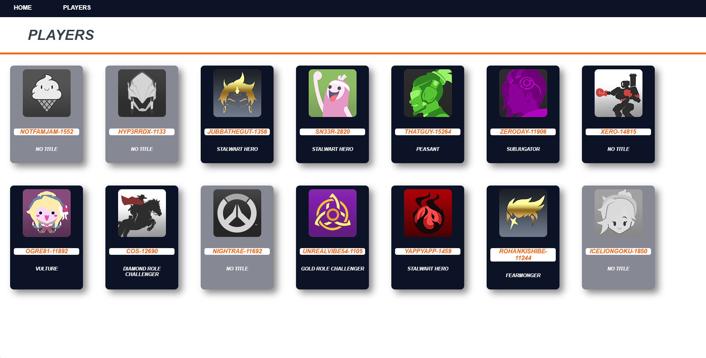

"Infra-Sight" is a program that myself and Eli Wood
built
for our school's Overwatch e-sport team. Written in Node.js, it pulls relevant player stats from each player
on the team,
and displays them all in one place. This is useful to determine which players we should put in the match
based on their
skill on each role.

FRC TEAM 7509
I'm on First Robotics Competition team 7509,
"Brainstorm Robotics". Check out our robot from 2023
in the video!
More recently, our team has installed a swerve drive base on our robot for the first time. While it was
quite difficult to understand at first, we were able to get a grasp of how the subsystem worked in time for
competition.
The ability to drive omnidirectionally proved useful in our 2024 McMaster competition, where we were allied
with
teams 2056 and 2200 who proposed the
idea of using our robot defensively. Our ability to maintain our rotation
whilst driving left to right played a big role in our matches, and eventually our victory.
JUST SURVIVE!
"Just Survive!" is a collaborative pet-project I've been working on with a group of friends, including
Eli Wood.
Made in the Unity engine, it is a single player, wave and economy based, first person zombie shooter, with
tower defense elements.
One of the first hurdles we encountered with this project was to figure out how to work on the
game collaboratively at the same time. We eventually were able to get a common workflow in place,
utilizing GitHub to host our main codebase, with 3D models and assets being shared to the developers
(such as myself) via online cloud file-hosting software. The game is still in it's early stages, but I look
forward to sharing it here and on my itch.io when it is complete!
ROADS OF RAGE
"Roads of Rage" is an unfinished game that was being developed in Greenfoot for a class project. The project
was not just about making games however, which is why I am including it here despite being incomplete. The purpose
of the project was to gain hands on experience with agile methodologies in the development cycle. The class was broken
into smaller teams which each had to devote roles to the team members and coordinate between each other using Slack and
other collaborative technologies to design and develop a game from scratch. Unfortunately, due to time constraints at the
end of the semester we were unable to complete the game itself, but regardless the project taught me a lot of valuable skills.